Proyek UTS membangun sistem pemantauan suhu dan kelembapan. ESP32 dengan sensor DHT22 (simulasi Wokwi) mengirim data ke laptop melalui dua protokol yang dibandingkan, yaitu MQTT (broker Mosquitto) dan HTTP (server Flask). Program penerima server.py mencatat setiap pembacaan ke SQLite (data/sensor.db), menyalinnya ke Supabase, dan menampilkannya pada dashboard real-time.
Pada versi UTS, basis data hanya berupa log pembacaan dan laporan RTT. Belum ada data induk perangkat, relasi antar tabel, maupun aturan validasi di tingkat basis data. Tugas ini melanjutkan proyek tersebut sesuai materi Pertemuan 9: merancang basis data relasional (perangkat, telemetri, dan alarm), menyimpan data melalui alur ingestion yang tervalidasi, menjalankan query analisis, dan menampilkan hasilnya pada dashboard.
| Komponen | Keterangan |
|---|---|
| Basis data | SQLite 3.50.4, file data/sensor.db, mode jurnal WAL, foreign key aktif |
| Ingestion | Python 3.13: Flask (HTTP POST /update, port 5000) dan paho-mqtt (topik sensor/dht22) |
| Broker MQTT | Mosquitto 2.1.2 pada 127.0.0.1:1883 |
| Dashboard | HTML, CSS, dan JavaScript: http://127.0.0.1:5000/ dan halaman baru /database |
| Data | 2.263 record dari log pengujian UTS (28 September–5 Oktober 2026), ditambah 105 record baru pada 2 November 2026. Total 2.368 pembacaan. |
Data dikirim oleh node demo Python (demo-node-01, source_mode = demo) yang meniru ESP32. Node ini mengirim bergantian melalui MQTT dan HTTP dengan format payload dan jalur penyimpanan yang sama. Wokwi Private IoT Gateway tidak tersedia, sehingga data bukan hasil ukur DHT22 fisik. Supabase tidak dijalankan pada pengujian ini; data baru tetap aman di SQLite sebagai antrean sinkronisasi.
sensor/dht22 atau HTTP /updateGambar 1. Alur ingestion data sensor pada proyek
Alur mengikuti tahapan pada materi (terima → validasi → normalisasi → simpan → konfirmasi). Server menambahkan event_id (UUID), protokol, dan waktu_diterima (UTC). Seluruh penulisan satu pembacaan dilakukan dalam satu transaksi. ACK baru dikirim setelah commit, sehingga data yang sudah dikonfirmasi pasti tersimpan. Pengiriman ulang yang identik dijawab dengan ACK lama tanpa membuat record baru (idempoten).
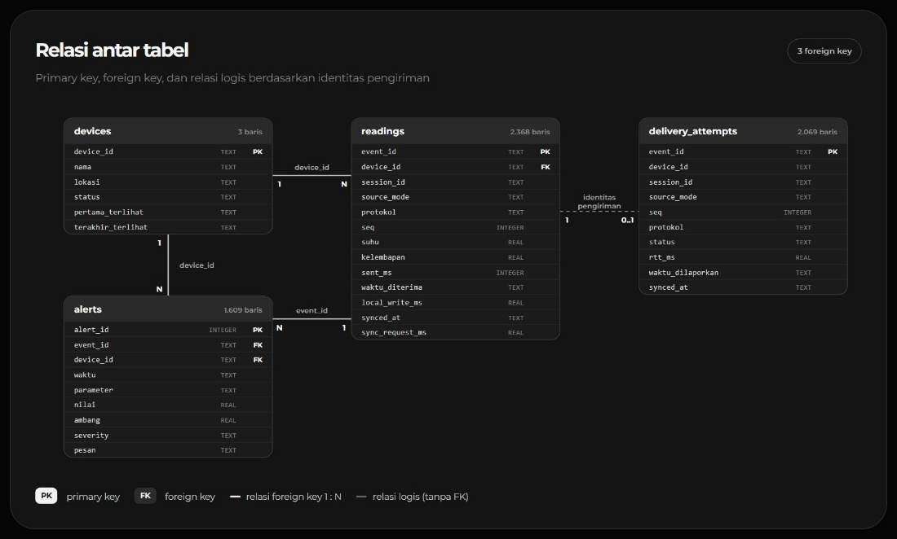
Gambar 2 adalah diagram relasi yang digambar otomatis dari metadata basis data (PK dan FK dibaca dengan PRAGMA foreign_key_list). Rancangannya mengikuti skema relasional Smart Greenhouse pada materi (DEVICES, SENSOR_READINGS, ALERTS), ditambah satu tabel dari proyek UTS:
device_id. Satu perangkat memiliki banyak pembacaan dan banyak alarm (relasi 1 : N, garis bertanda 1 dan N).event_id, FK device_id → devices.event_id → readings (pembacaan pemicu) dan FK device_id → devices.(device_id, session_id, protokol, seq). FK tidak dipakai karena laporan RTT bisa tiba lebih dulu daripada pembacaannya, atau pembacaannya gagal terkirim.Tabel readings memakai pola time-series di dalam basis data relasional. waktu_diterima berperan sebagai timestamp; device_id, session_id, source_mode, dan protokol berperan sebagai tag untuk filter; suhu dan kelembapan berperan sebagai field nilai. Indeks (device_id, waktu_diterima) mempercepat query berbasis waktu, sedangkan relasi dan constraint menjaga integritas data perangkat dan alarm.
waktu_diterima dibuat server saat pesan diterima, sebelum validasi dan penyimpanan. Formatnya ISO 8601 UTC dengan milidetik, misalnya 2026-11-02T04:13:42.297+00:00. Dashboard dan query mengonversinya ke WIB (UTC+7) hanya saat ditampilkan.sent_ms adalah millis() pengirim (lama menyala), bukan waktu absolut. Nilai ini tidak boleh dikurangkan dari waktu UTC server.seq.CHECK (waktu_diterima LIKE '____-__-__T__:__:__%+00:00') menolak timestamp yang tidak berformat UTC. Karena formatnya seragam, urutan teks sama dengan urutan waktu sehingga indeks dapat dipakai untuk filter rentang waktu.Seluruh tabel didefinisikan dalam satu berkas database/schema.sql. Fungsi init_db() di server.py menjalankan berkas ini setiap kali server dimulai. Semua pernyataan memakai IF NOT EXISTS sehingga aman dijalankan berulang kali.
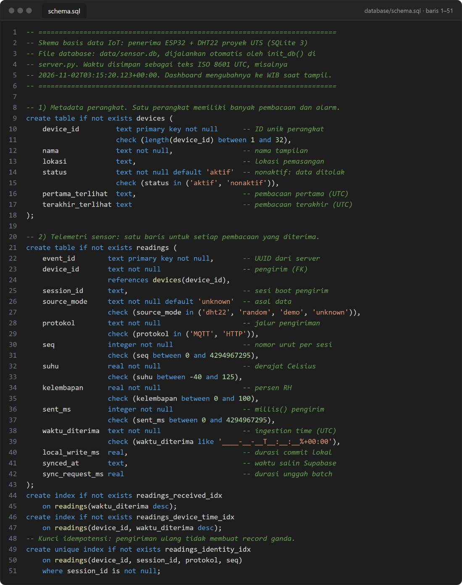
devices, readings, dan indeksnya (database/schema.sql baris 1–51)Penjelasan Gambar 3:
device_id adalah PRIMARY KEY NOT NULL dengan CHECK panjang 1–32 karakter, sama dengan aturan validasi payload. nama wajib diisi, lokasi opsional. status berisi default 'aktif' dengan CHECK aktif/nonaktif; perangkat nonaktif akan ditolak saat ingestion. pertama_terlihat dan terakhir_terlihat diisi otomatis oleh server.event_id (UUID dari server) menjadi PRIMARY KEY. device_id memakai REFERENCES devices(device_id), sehingga pembacaan dari perangkat yang tidak terdaftar ditolak basis data. Setiap kolom nilai diberi CHECK sesuai rentang sensor DHT22: suhu −40 sampai 125 °C, kelembapan 0 sampai 100 %RH. Protokol hanya boleh MQTT atau HTTP, source_mode hanya dht22/random/demo/unknown, dan seq/sent_ms berada pada rentang bilangan 32-bit. Kolom local_write_ms, synced_at, dan sync_request_ms menyimpan metadata proses.readings_received_idx mempercepat pengambilan data terbaru. readings_device_time_idx mengikuti saran materi (indeks device_id, timestamp). readings_identity_idx adalah indeks UNIQUE pada (device_id, session_id, protokol, seq) sebagai kunci idempotensi, sehingga pengiriman ulang tidak menghasilkan record ganda. Klausa WHERE session_id IS NOT NULL membuat data lama tanpa sesi tetap dapat disimpan.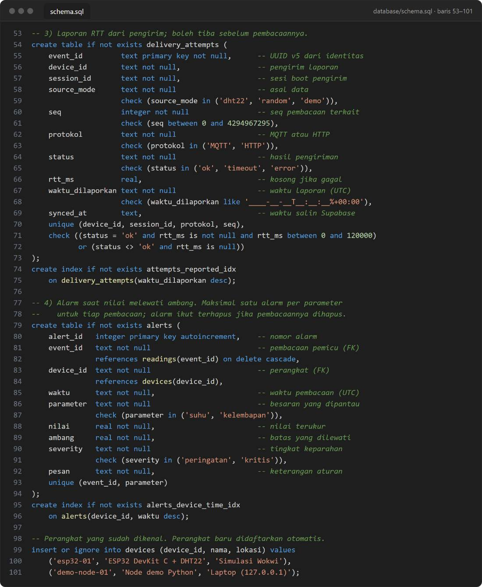
delivery_attempts, alerts, dan data awal perangkat (baris 53–101)Penjelasan Gambar 4:
event_id berupa UUID v5 yang dihitung dari identitas pengiriman. status dibatasi ok/timeout/error. Constraint tingkat tabel mewajibkan rtt_ms terisi (0–120.000 ms) jika status ok dan kosong jika gagal, sehingga kegagalan tidak dihitung sebagai RTT 0. UNIQUE pada identitas mencegah laporan ganda.alert_id INTEGER PRIMARY KEY AUTOINCREMENT. event_id merujuk ke readings dengan ON DELETE CASCADE, sehingga alarm ikut terhapus saat data mentah dihapus pada proses retensi. device_id merujuk ke devices. parameter dan severity dibatasi CHECK, dan UNIQUE (event_id, parameter) memastikan maksimal satu alarm per parameter untuk setiap pembacaan.alerts_device_time_idx dipakai untuk menampilkan alarm terbaru per perangkat. INSERT OR IGNORE mengisi data awal dua perangkat yang dikenal tanpa menimpa perubahan manual; perangkat lain akan didaftarkan otomatis.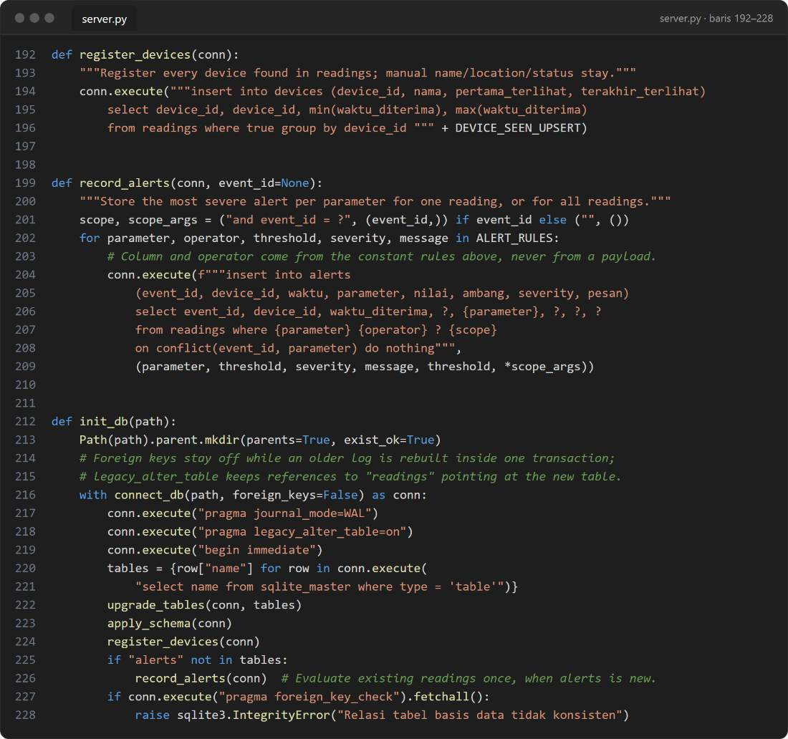
register_devices(), record_alerts(), dan init_db() pada server.pyschema.sql. Tabel lama yang belum memiliki FK/CHECK dibangun ulang tanpa kehilangan data. Fungsi ini juga mendaftarkan perangkat dari data lama, menghitung alarm historis satu kali, dan menutup proses dengan PRAGMA foreign_key_check untuk memastikan tidak ada relasi yatim. Pada database UTS, 2.263 pembacaan dan 1.964 laporan RTT tetap utuh (jumlah dan total nilainya sama sebelum dan sesudah), 1.609 alarm historis terbentuk, dan PRAGMA integrity_check bernilai ok.INSERT … SELECT … GROUP BY device_id dengan UPSERT (ON CONFLICT DO UPDATE). Hasilnya, waktu pertama dan terakhir terlihat diperbarui tanpa menimpa nama, lokasi, atau status yang diisi manual.INSERT … SELECT untuk setiap aturan ambang: suhu ≥ 32 °C (kritis), suhu ≥ 30 °C (peringatan), kelembapan ≥ 80 %RH (peringatan), dan kelembapan ≤ 50 %RH (peringatan). Aturan terparah dievaluasi lebih dulu, dan ON CONFLICT(event_id, parameter) DO NOTHING membuat hanya alarm terparah per parameter yang tersimpan. Ambang ini adalah asumsi demo dan dapat diubah sesuai kebutuhan ruangan.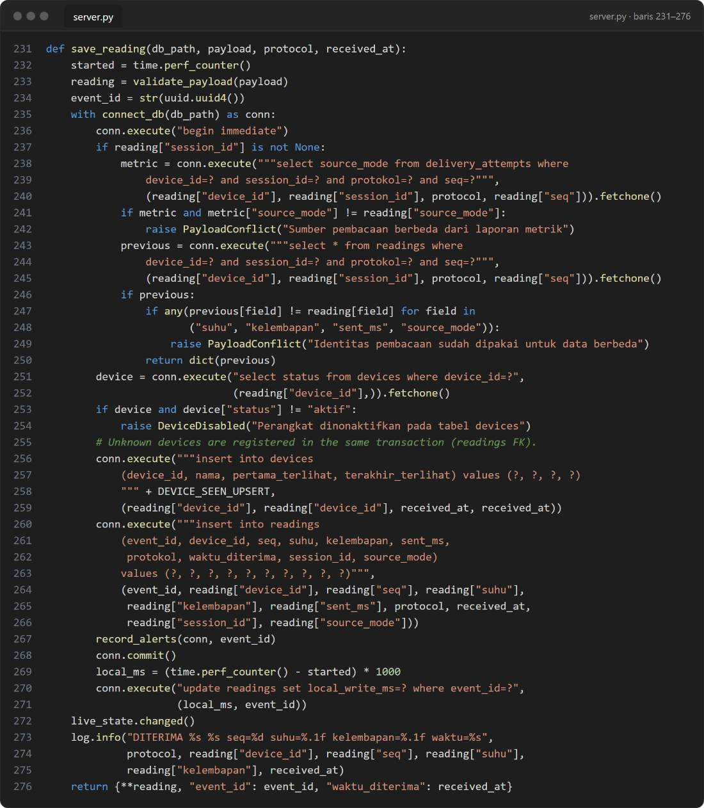
save_reading(): validasi, idempotensi, pendaftaran perangkat, INSERT, dan alarmGambar 6 menunjukkan jalur penyimpanan yang dipakai bersama oleh MQTT dan HTTP. Payload divalidasi terlebih dahulu dengan validate_payload(). Transaksi BEGIN IMMEDIATE lalu memeriksa identitas: retry identik mengembalikan record lama, sedangkan identitas sama dengan isi berbeda ditolak sebagai konflik (HTTP 409). Setelah itu status perangkat diperiksa; perangkat nonaktif ditolak (HTTP 403, MQTT tanpa ACK). Perangkat didaftarkan atau diperbarui dengan UPSERT, pembacaan disimpan dengan parameter terikat (?) sehingga nilai payload tidak pernah dirangkai menjadi SQL, dan alarm dibuat dengan record_alerts(). Durasi hingga commit dicatat pada local_write_ms.
Struktur tabel ditampilkan oleh halaman baru Database Explorer (/database) pada dashboard. Isinya dibaca langsung dari skema yang aktif melalui PRAGMA table_info, foreign_key_list, index_list, dan teks DDL di sqlite_master, bukan ditulis manual. Koneksi halaman ini bersifat baca-saja (PRAGMA query_only).
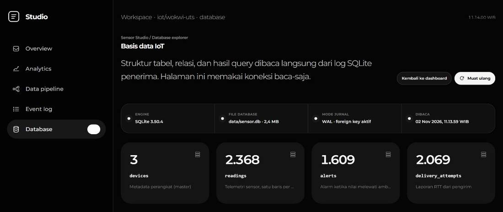
Gambar 7 menunjukkan engine SQLite 3.50.4, file data/sensor.db berukuran sekitar 2,4 MB, dan mode jurnal WAL dengan foreign key aktif. Jumlah barisnya adalah devices 3, readings 2.368, alerts 1.609, dan delivery_attempts 2.069. Tabel devices berisi dua perangkat awal dan esp32-02 yang sengaja didaftarkan berstatus nonaktif untuk uji validasi identitas.
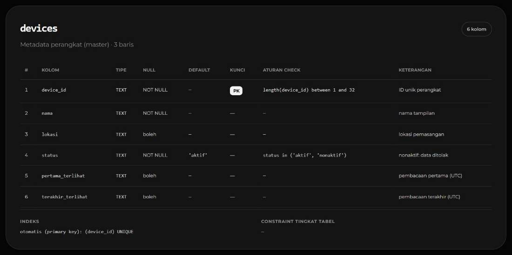
devices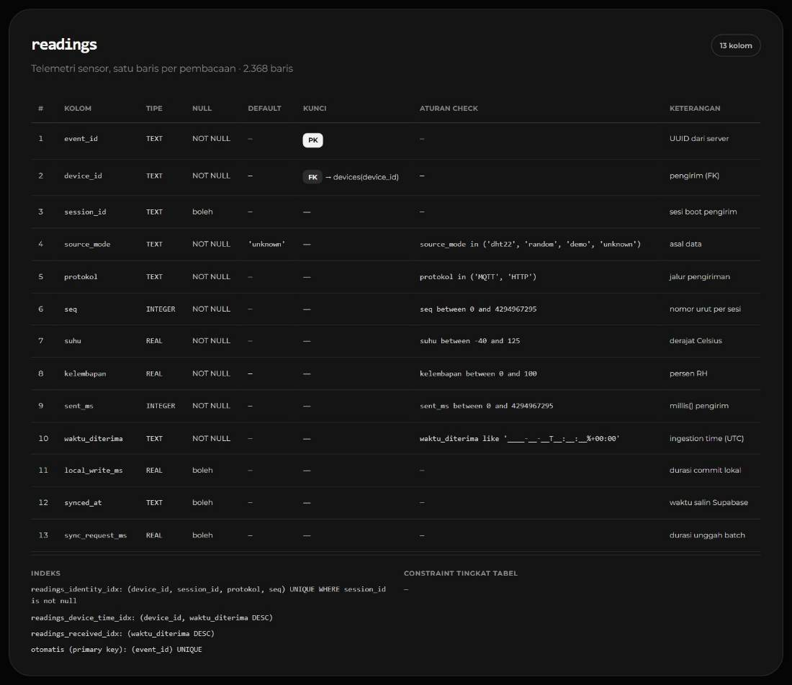
readingsKolom pada Gambar 8 dan 9 berarti: TIPE adalah kelas penyimpanan SQLite (TEXT, INTEGER, REAL); NULL menunjukkan apakah kolom wajib diisi; KUNCI menandai PK atau FK beserta tabel rujukannya; ATURAN CHECK adalah aturan validasi di tingkat basis data; dan KETERANGAN diambil dari komentar pada schema.sql. Tabel devices memiliki 6 kolom dengan PK device_id dan default status 'aktif'. Tabel readings memiliki 13 kolom: PK event_id, FK device_id → devices(device_id), tujuh aturan CHECK, dan empat indeks, termasuk indeks unik parsial readings_identity_idx. Timestamp disimpan sebagai TEXT ISO 8601 karena SQLite tidak memiliki tipe tanggal khusus.
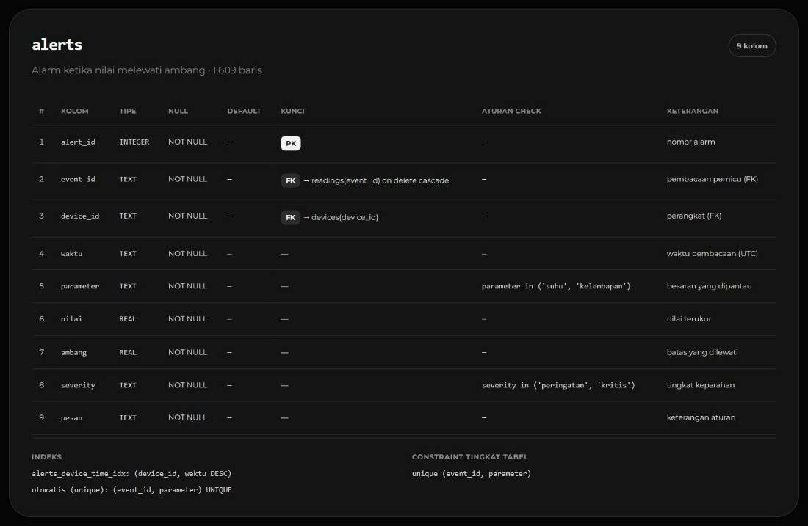
alerts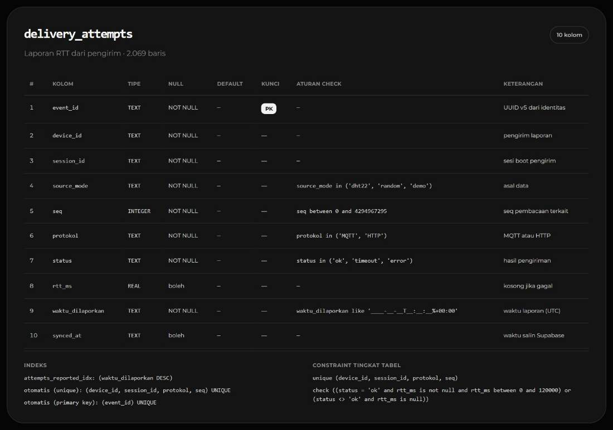
delivery_attemptsGambar 10 memperlihatkan dua foreign key pada alerts: event_id → readings(event_id) on delete cascade dan device_id → devices(device_id), serta constraint tingkat tabel unique (event_id, parameter). Gambar 11 memperlihatkan delivery_attempts dengan 10 kolom, constraint UNIQUE pada identitas pengiriman, dan CHECK yang menghubungkan status dengan rtt_ms. Bagian INDEKS menunjukkan indeks buatan sendiri dan indeks otomatis yang dibuat SQLite untuk PRIMARY KEY dan UNIQUE.
Query disimpan di database/queries.sql dan dijalankan oleh halaman Database Explorer pada 2 November 2026 pukul 11.14 WIB, setelah node demo berhenti. Setiap gambar memuat SQL, hasil, waktu eksekusi, dan rencana eksekusi (EXPLAIN QUERY PLAN). Karena memakai SQLite, fungsi PostgreSQL pada materi (date_trunc, NOW() - INTERVAL) diganti dengan strftime().
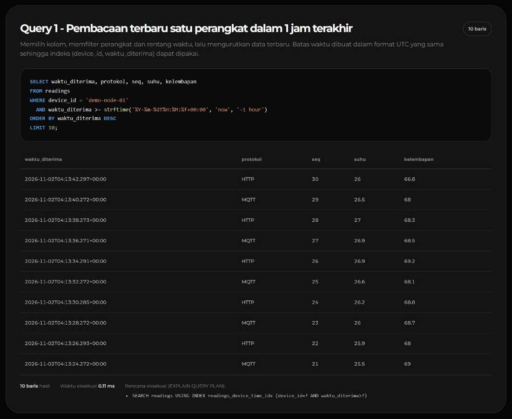
Query 1 memilih kolom, memfilter perangkat demo-node-01 dan rentang 1 jam terakhir, lalu mengurutkan dari yang terbaru (materi slide 14). Batas waktu dibuat dengan format UTC yang sama dengan kolom, sehingga perbandingan tetap memakai indeks. Hasilnya 10 baris terbaru. Baris teratas diterima pukul 04:13:42.297 UTC (11.13.42 WIB) dengan seq 30, HTTP, 26 °C, dan 66,8 %RH. Nilai seq bergantian MQTT (ganjil) dan HTTP (genap), membuktikan kedua protokol tersimpan di tabel yang sama. Rencana eksekusi SEARCH readings USING INDEX readings_device_time_idx (device_id=? AND waktu_diterima>?) menunjukkan indeks benar-benar dipakai, sehingga query selesai dalam kurang dari 1 ms.
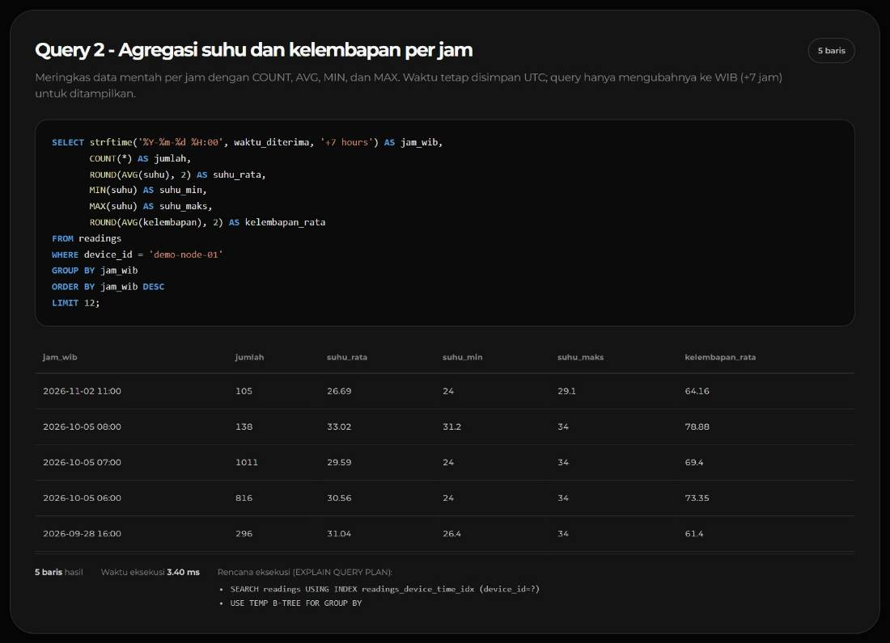
Query 2 meringkas data mentah per jam dengan COUNT, AVG, MIN, dan MAX (materi slide 15). Waktu disimpan UTC dan dikonversi ke WIB dengan strftime(…, '+7 hours') hanya untuk tampilan. Sebanyak 2.366 baris milik demo-node-01 diringkas menjadi 5 baris:
| Jam (WIB) | Jumlah | Suhu rata-rata | Suhu min–maks | Kelembapan rata-rata |
|---|---|---|---|---|
| 2026-11-02 11:00 | 105 | 26,69 °C | 24,0–29,1 °C | 64,16 %RH |
| 2026-10-05 08:00 | 138 | 33,02 °C | 31,2–34,0 °C | 78,88 %RH |
| 2026-10-05 07:00 | 1.011 | 29,59 °C | 24,0–34,0 °C | 69,40 %RH |
| 2026-10-05 06:00 | 816 | 30,56 °C | 24,0–34,0 °C | 73,35 %RH |
| 2026-09-28 16:00 | 296 | 31,04 °C | 26,4–34,0 °C | 61,40 %RH |
AVG menggambarkan kondisi umum setiap jam, sedangkan MAX menunjukkan nilai puncak. Jam 08.00 WIB pada 5 Oktober paling panas (rata-rata 33,02 °C), sedangkan sesi 2 November paling sejuk. Ringkasan seperti ini menjadi dasar downsampling untuk kebijakan retensi.
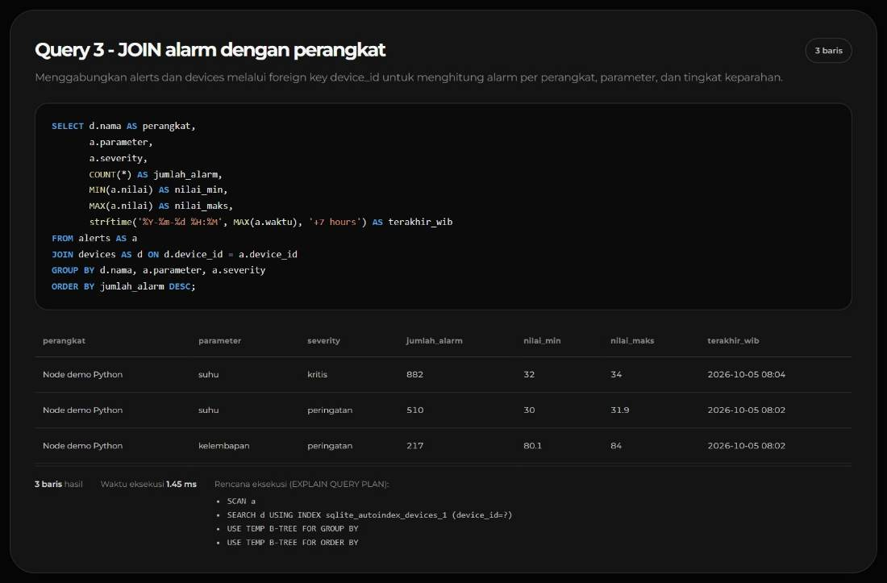
Query 3 menggabungkan alerts dengan devices melalui foreign key device_id, lalu mengelompokkan per perangkat, parameter, dan tingkat keparahan. Hasilnya tiga kelompok untuk Node demo Python: suhu kritis 882 alarm (32–34 °C), suhu peringatan 510 alarm (30–31,9 °C), dan kelembapan peringatan 217 alarm (80,1–84 %RH). Totalnya 1.609, sama dengan jumlah baris tabel alerts. Alarm terakhir terjadi pada 5 Oktober 2026 pukul 08.04 WIB. Data 2 November tidak memicu alarm karena suhu maksimumnya 29,1 °C, dan tidak ada pembacaan dengan kelembapan ≤ 50 %RH. Rencana eksekusi menunjukkan JOIN mencari perangkat melalui indeks primary key devices.
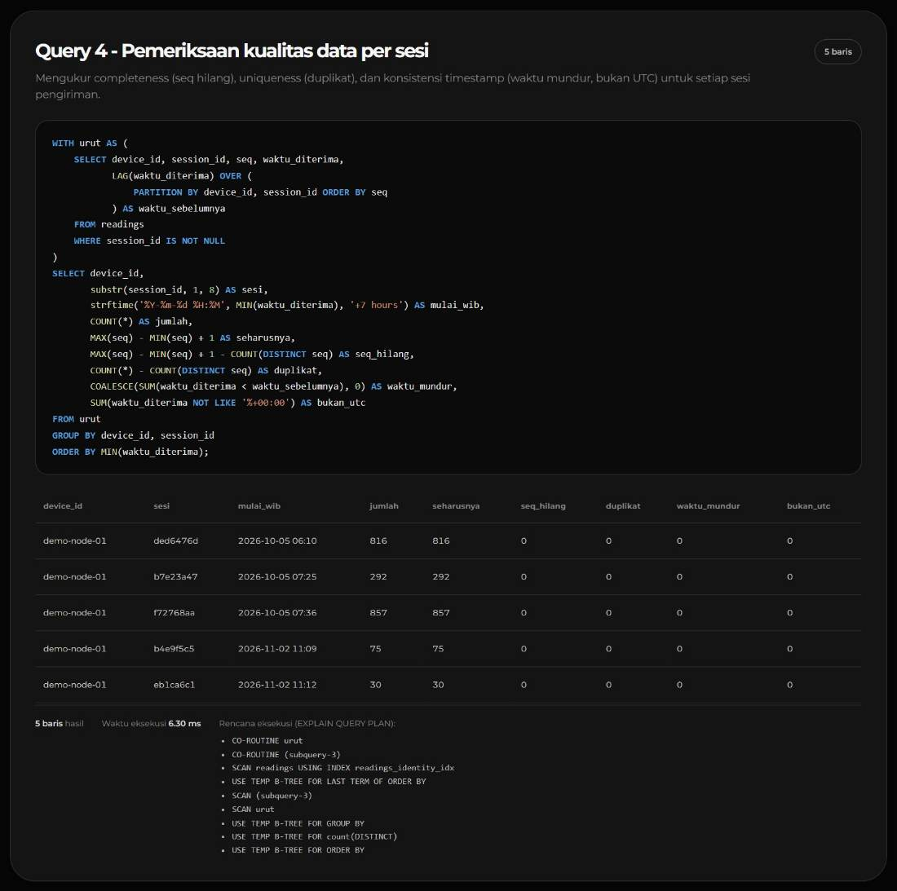
Query 4 mengukur dimensi kualitas data dari materi. Window function LAG() membandingkan waktu setiap record dengan record ber-seq sebelumnya. Kolom seharusnya dihitung dari MAX(seq) - MIN(seq) + 1. Hasilnya ada lima sesi: tiga dari 5 Oktober (816, 292, dan 857 record) dan dua dari 2 November (75 dan 30 record). Semua sesi memiliki jumlah = seharusnya, seq_hilang = 0 (completeness), duplikat = 0 (uniqueness), waktu_mundur = 0, dan bukan_utc = 0 (konsistensi timestamp). Sebanyak 298 record format lama tanpa session_id tidak ikut dihitung karena tidak memiliki nomor urut per sesi.
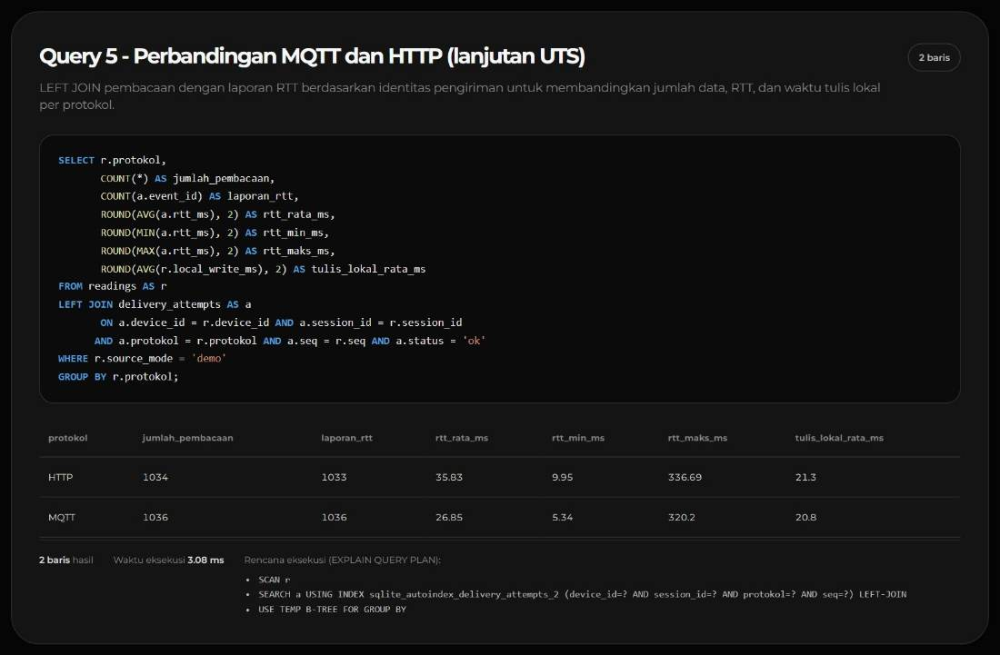
Query 5 melanjutkan topik UTS. Query ini memakai LEFT JOIN antara readings dan delivery_attempts berdasarkan identitas pengiriman. LEFT JOIN dipilih agar pembacaan tanpa laporan RTT tetap terhitung. HTTP memiliki 1.034 pembacaan dan 1.033 laporan RTT (satu laporan tidak sampai), dengan RTT rata-rata 35,83 ms (9,95–336,69 ms). MQTT memiliki 1.036 pembacaan dan 1.036 laporan, dengan RTT rata-rata 26,85 ms (5,34–320,2 ms). Waktu tulis lokal keduanya hampir sama (21,3 ms dan 20,8 ms). Pada data demo lokal ini MQTT lebih cepat, karena koneksinya dipertahankan sementara HTTP membuat request baru setiap pembacaan. Hasil ini belum mewakili jaringan ESP32 sebenarnya.
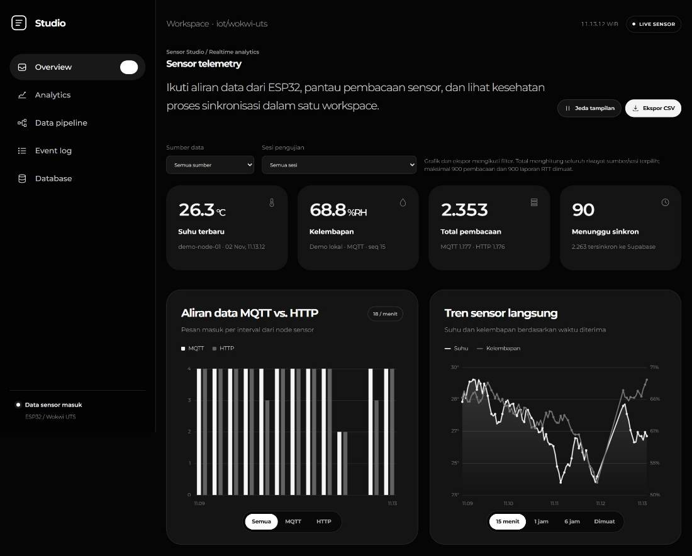
Gambar 17 diambil pukul 11.13.12 WIB ketika node demo sedang mengirim data, sehingga statusnya LIVE SENSOR. Kartu ringkasan menampilkan suhu terbaru 26,3 °C dan kelembapan 68,8 %RH (MQTT, seq 15), total 2.353 pembacaan (MQTT 1.177, HTTP 1.176), serta 90 record menunggu sinkronisasi. Jumlah ini sedikit lebih kecil daripada hasil query (2.368) karena node masih berjalan saat gambar diambil. Grafik kiri menghitung pesan MQTT dan HTTP per interval; grafik kanan menampilkan tren suhu dan kelembapan pada rentang 15 menit. Semua angka berasal dari endpoint /api/dashboard yang membaca tabel SQLite.
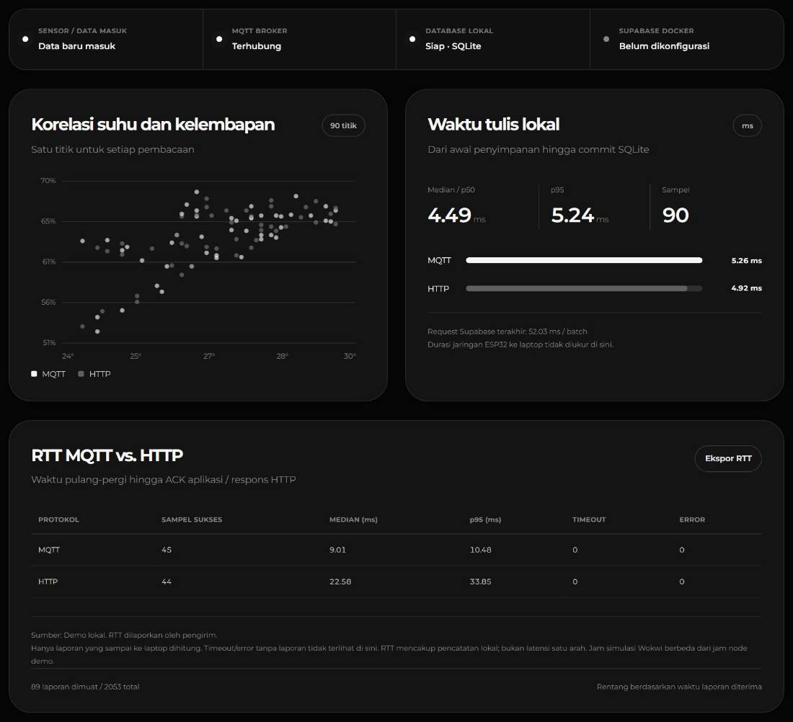
Gambar 18 menunjukkan status layanan: data sensor masuk, broker MQTT terhubung, database lokal SQLite siap, dan Supabase belum dikonfigurasi (sengaja tidak dijalankan). Diagram sebar memuat 90 titik pembacaan pada rentang 15 menit. Waktu tulis lokal hingga commit memiliki median 4,49 ms dan p95 5,24 ms. Tabel RTT dari delivery_attempts menunjukkan median MQTT 9,01 ms (45 sampel) dan HTTP 22,58 ms (44 sampel) tanpa timeout maupun error.
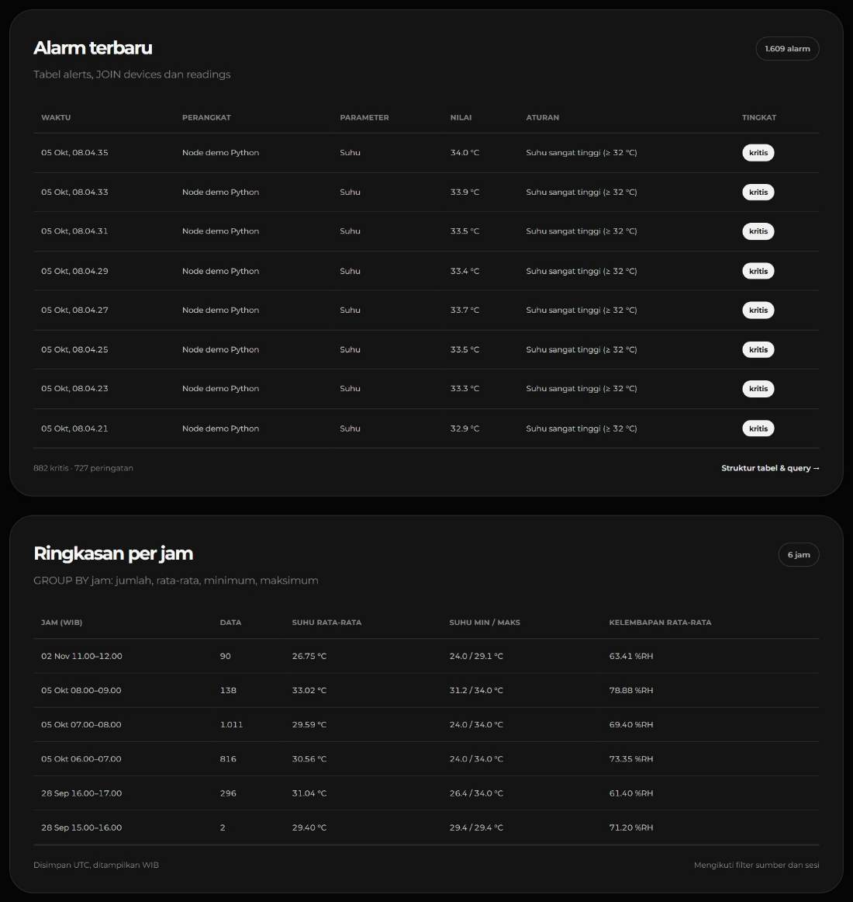
Gambar 19 adalah panel baru hasil pengembangan tugas ini. Alarm terbaru menampilkan hasil JOIN alerts–devices–readings (total 1.609 alarm: 882 kritis dan 727 peringatan). Ringkasan per jam menampilkan agregasi GROUP BY per jam dengan logika yang sama seperti Query 2. Waktu disimpan UTC dan ditampilkan WIB. Kedua panel mengikuti filter sumber data dan sesi di bagian atas dashboard.
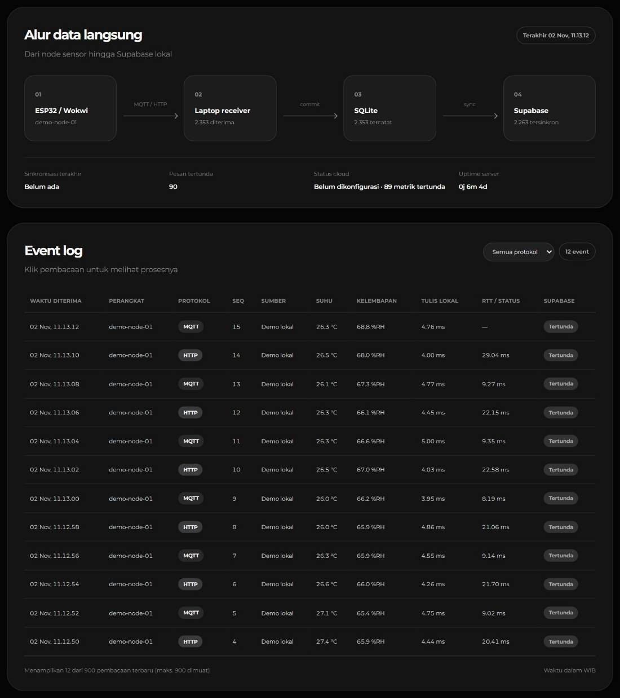
Gambar 20 memperlihatkan alur ESP32/node → receiver (2.353 diterima) → SQLite (2.353 tercatat) → Supabase (2.263 tersinkron dari pengujian sebelumnya). Karena Supabase tidak dijalankan, 90 pembacaan dan 89 laporan metrik tercatat sebagai tertunda; data tetap aman di SQLite dan akan diunggah saat layanan tersedia (prinsip store and forward). Event log menampilkan 12 pembacaan terbaru beserta protokol, seq, sumber, nilai sensor, durasi tulis lokal sekitar 4–5 ms, RTT, dan status sinkronisasi.
Pengujian dijalankan dengan skrip tugas/basis-data/tools/validasi.py terhadap receiver yang sedang berjalan, melalui request HTTP dan pesan MQTT nyata. Jumlah record diperiksa sebelum dan sesudah setiap kasus.
| No | Kasus uji | Diharapkan | Hasil | Pesan server |
|---|---|---|---|---|
| 1 | Suhu berupa teks | 400 | 400 | suhu harus angka terbatas |
| 2 | Suhu 200 °C (di luar rentang DHT22) | 400 | 400 | suhu di luar rentang DHT22 |
| 3 | Kelembapan di atas 100 % | 400 | 400 | kelembapan di luar rentang DHT22 |
| 4 | Field suhu hilang | 400 | 400 | Field sensor tidak lengkap atau tidak dikenal |
| 5 | Field asing ditambahkan | 400 | 400 | Field sensor tidak lengkap atau tidak dikenal |
| 6 | device_id mengandung spasi | 400 | 400 | device_id tidak valid |
| 7 | seq negatif | 400 | 400 | seq harus bilangan bulat 0..4294967295 |
| 8 | source_mode tidak dikenal | 400 | 400 | source_mode harus dht22, random, atau demo |
| 9 | JSON rusak | 400 | 400 | Body harus objek JSON |
| 10 | Content-Type bukan JSON | 415 | 415 | Content-Type harus application/json |
| 11 | Perangkat nonaktif (esp32-02) | 403 | 403 | Perangkat dinonaktifkan pada tabel devices |
| 12 | Retry identik record tersimpan | 200, ACK lama | 200 | event_id sama dengan record pertama |
| 13 | Identitas sama, nilai berbeda | 409 | 409 | Identitas pembacaan sudah dipakai untuk data berbeda |
| 14 | Kelembapan 150 % melalui MQTT | tanpa ACK | tanpa ACK | ditolak validasi subscriber |
Ke-14 kasus lulus. Jumlah record tetap 2.338 sebelum dan sesudah setiap kasus, sehingga payload salah tidak masuk ke basis data dan retry tidak membuat record ganda. Selain validasi di aplikasi, CHECK dan foreign key pada tabel menjadi lapisan pengaman kedua; uji otomatis membuktikan INSERT langsung dengan suhu 200 °C atau perangkat tidak terdaftar ditolak SQLite.
| Dimensi | Bukti | Hasil |
|---|---|---|
| Completeness | Query 4: seq_hilang per sesi | 0 nomor hilang pada 5 sesi (2.070 record bersesi) |
| Accuracy | Validasi rentang dan CHECK suhu/kelembapan | Semua nilai dalam rentang DHT22. Akurasi fisik tidak diklaim karena data berasal dari node demo. |
| Consistency | Query 4: bukan_utc; tipe REAL dan satuan °C / %RH | 0 timestamp non-UTC; format dan satuan seragam |
| Timeliness | Query 4: waktu_mundur; Gambar 18: waktu tulis dan RTT | 0 waktu mundur; median tulis lokal 4,49 ms; median RTT 9,01 ms (MQTT) dan 22,58 ms (HTTP) |
| Uniqueness | Query 4: duplikat; indeks unik identitas; uji retry | 0 duplikat; retry dijawab ACK lama, konflik ditolak 409 |
Retensi belum dijalankan otomatis; rancangannya mengikuti materi slide 16. Data mentah disimpan 7 hari, ringkasan per jam hasil Query 2 disimpan 2 tahun, dan data lama diarsipkan ke CSV (dashboard sudah menyediakan ekspor CSV). Saat data mentah dihapus, alarm terkait ikut terhapus otomatis karena ON DELETE CASCADE. Untuk koneksi terputus, receiver menyimpan data ke SQLite lebih dulu sebelum sinkronisasi cloud, dan kunci idempotensi (device_id, session_id, protokol, seq) mencegah duplikasi saat perangkat mengirim ulang.
Sebanyak 33 tes Python (26 tes proyek UTS dan 7 tes baru untuk basis data) serta 6 tes JavaScript dashboard lulus. Tes baru mencakup FK dan CHECK pada skema baru, pendaftaran perangkat dan alarm terparah, penolakan perangkat nonaktif melalui HTTP dan MQTT, migrasi log versi UTS tanpa kehilangan data, penanganan data lama yang melanggar aturan baru, serta halaman Database Explorer yang hanya dapat membaca.
devices, readings, alerts, dan delivery_attempts. Skemanya dilengkapi primary key, tiga foreign key, constraint CHECK dan UNIQUE, serta indeks. Skema ditulis di database/schema.sql, dijalankan otomatis, dan log UTS lama dimigrasikan tanpa kehilangan data.| Berkas | Isi |
|---|---|
database/schema.sql | Kode CREATE TABLE, indeks, dan data awal perangkat |
database/queries.sql | Lima query analisis yang dijalankan halaman /database |
server.py | Ingestion MQTT/HTTP, validasi, migrasi, registrasi perangkat, dan alarm |
dashboard_state.py | Data dashboard, struktur tabel, dan eksekusi query baca-saja |
dashboard/index.html, app.js | Dashboard utama beserta panel alarm dan ringkasan per jam |
dashboard/database.html, database.js | Halaman Database Explorer (relasi, struktur, query) |
tests/test_database.py | Tes otomatis fitur basis data |
tugas/basis-data/ | Laporan ini, gambar, skrip pengambil gambar, dan bukti (database.json, validasi.json) |